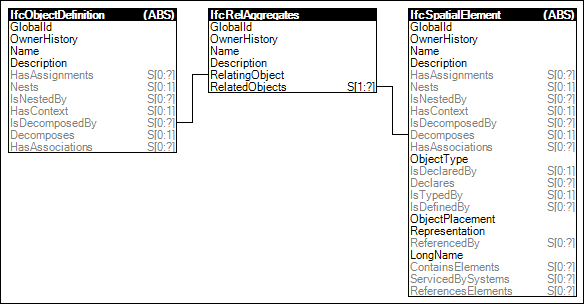

Link to this page
Link to this pageProvision of a spatial structure of the project by aggregating spatial structure elements. The spatial structure is a hierarchical tree of spatial structure elements (site, building, storey, space) ultimately assigned to the project. Decomposition refers to the relationship to lower level elements (e.g. this storey has spaces).
The order of spatial structure elements being included in the concept for building projects are from high to low level: IfcProject, IfcSite, IfcBuilding, IfcBuildingStorey, IfcSpace. Therefore an spatial structure element can only has parts of an element at the same or lower level.
Figure 64 illustrates an instance diagram.
 |
Figure 64 — Spatial Decomposition |